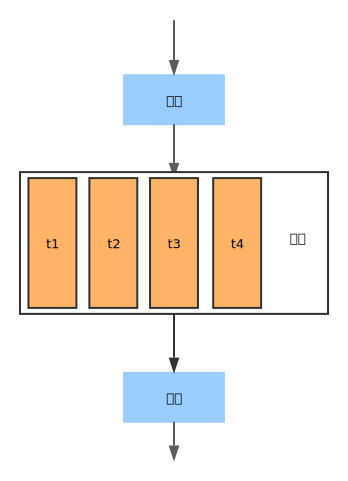
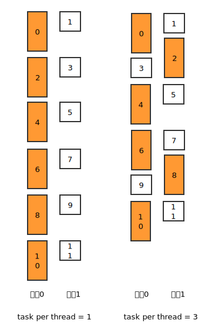

小喵的唠叨话：最近很久没写博客了，一是因为之前写的LSoftmax后馈一直没有成功，所以在等作者的源码。二是最近没什么想写的东西。前两天，在预处理图片的时候，发现处理200w张图片，跑了一晚上也才处理完一半。早上的时候，出于无奈，花半小时改写了一个简单调用OpenMP的处理程序，用了30个核心，然后一小时不到就处理完了。感慨在多核的时代，即使是简单的程序，如果能支持多核，应该都能节省不少时间。
一、写在前面
对于OpenMP，小喵其实并不是了解很多，而且小喵本身也只用到了OpenMP的最简单的功能。在这里主要是分享一个自己常用的写简单的并行程序的思路。希望能帮助到大家。
这个设计模式的主要特点如下：
- 处理的任务是独立的；
- 可以在运行中输出结果，而不是最终才输出；
- 有限的资源占用；
- 在每次任务的执行时间不同的情况下，也能很好的工作；
- 在每次任务执行需要占用私有的数据时（依赖了线程不安全的库），也可以很好的工作；
- 输出是有序的
注意：本文中仅介绍小喵自己用到的几个OpenMP的功能。既不深入也不完善。仅适合初学者。 小喵学习OpenMP主要是看了周明伟的博客： OpenMP编程指南。想要比较深入地学习的童鞋请看周老师的博客。对于什么是OpenMP，OpenMP有什么优点等的问题。周老师的博客也很详细的说明。这里小喵就不多废话了。直奔主题。
二、如何使用OpenMP
小喵使用的开发环境是Linux，windows的童鞋可以看一下这个博客：http://www.cnblogs.com/yangyangcv/archive/2012/03/23/2413335.html。MAC上的GCC实际上是Clang，想要使用OpenMP的话比较麻烦。要额外装一些东东，自己bing一下就有。
本喵的编译环境是CentOS 7， GCC 4.8.5。大多数系统和编译器都支持OpenMP了。
先举个小栗子： 不使用OpenMP：
#include <iostream>
#define N 100000000
int fun() {
int a = 0;
for (int i = 0; i < N; ++ i) {
a += i;
}
return a;
}
int main() {
for (int i = 0; i < 100; ++ i) {
fun();
}
std::cout << "finish" << std::endl;
return 0;
}之后使用g++编译，并计时：
g++ sample_without_omp.cpp -o sample_without_omp.bin
time ./sample_with_omp.bin运行结果：
./sample_without_omp.bin 24.42s user 0.00s system 100% cpu 24.417 total这里可以看到用了100%的cpu，总时间是24.417 s。
使用OpenMP，调用2个线程：
#include <iostream>
#include <omp.h>
#define N 100000000
int fun() {
int a = 0;
for (int i = 0; i < N; ++ i) {
a += i;
}
return a;
}
int main() {
#pragma omp parallel for num_threads(2) schedule(dynamic)
for (int i = 0; i < 100; ++ i) {
fun();
}
std::cout << "finish" << std::endl;
return 0;
}这里源码的差别是多了一个omp.h的头文件，和一个奇怪的语句： #pragma omp parallel for num_threads(2) schedule(dynamic)
编译的时候，也有点小修改：
g++ sample_with_omp.cpp -o sample_with_omp.bin -fopenmp
time ./sample_with_omp.bin运行结果如下：
./sample_with_omp.bin 24.32s user 0.01s system 199% cpu 12.182 total可以看出，user的时间几乎没变，这表示CPU总的运行时间没有变化。但是cpu的使用变成了199%，total的时间变成了12.182 s。这就表明了我们使用了2个cpu，使得运行时间成功减半了！是不是很愉快，我们只添加了1行代码，就使得程序的速度翻倍。可见OpenMP是多么的简洁实用。
那么，现在是不是不用小喵说，我们也知道怎么给程序加入OpenMP的支持了呢？
归纳一下，主要有三点：
- 加入OpenMP的头文件
omp.h - 使用合适的
编译器指令修饰我们需要并行的部分（线程数、任务分配模式等等，后面会讲到） - 编译的时候加入
openmp的支持，编译的时候加入参数-fopenmp
三、fork/join的并行执行模式
我们之前看到了一个简单的例子，可以看出，程序其实是有串行部分和并行部分两个部分组成的。
在程序刚启动的时候，只有一个主线程，当执行到并行部分的时候（上面的例子中就是pragma之后的for循环），并行的代码会通过派生其他线程来执行。只有当并行的所有代码执行完之后，才会继续执行串行的部分。
因此主要的运行流程是这个样子的：

理解这个流程是相当重要的，可以避免很多的不必要的错误。一个常见的错误就是资源访问的冲突。比如文件，流对象等，如果在并行的代码部分随意访问这些资源，就可能会导致不可预见的错误。这在多线程编程中也是最常出现的错误，我们在下面会具体说到。
四、OpenMP的常用指令和库函数
在C/C++中，OpenMP的指令使用的格式如下：
#pragma omp 指令 [子句 [子句] ...]指令用来指示下面的代码的运行模式。子句是给出一些额外的信息。
这里主要介绍两个指令：parallel，for
parallel：用在代码段之前，表示下面的代码段使用多线程运行。for：用于for循环之前，将循环分配到多个线程中并行执行，必须保证每次循环之间无相关性。parallel for：parallel和for语句的结合，也是用在一个for循环之前，表示for循环的代码将被多个线程并行执行。
小喵使用的时候都是直接使用了 parallel for 这个组合指令。用来对紧接着的 for 循环的代码段进行并行。其他的指令请查阅之前提到的博客。
子句中主要是给出一些额外的设置，这里也主要介绍2个：num_threads，schedule。
- num_threads：指定线程的数目（不设置该参数似乎会使用和cpu核心数相同的线程数）。
- schedule：指定如何调度for循环迭代。有4种模式：
static、dynamic、guided、·，后面会专门讲到。
这里，我们再回顾一下之前写的代码：
#pragma omp parallel for num_threads(2) schedule(dynamic)是不是豁然开朗。这句话的意思是，使用OpenMP（#pragma omp），将下面的 for 循环使用多线程去执行（parallel for），线程数为2（num_threads(2)），任务调度方式使用 dynamic 模式（schedule(dynamic)）。 现在，让我们趁热打铁，学习for循环的写法。
这里，小喵直接复制了周老师的说法（解释得实在太好了）：
for 循环语句中，书写是需要按照一定规范来写才可以的，即for循环小括号内的语句要按照一定的规范进行书写，for语句小括号里共有三条语句 for( i = start; i < end; i++) i = start; 是for循环里的第一条语句，必须写成 “变量＝初值” 的方式。如 i＝0 i < end; 是for循环里的第二条语句，这个语句里可以写成以下4种形式之一： 变量 < 边界值 变量 <= 边界值 变量 > 边界值 变量 >= 边界值 如 i>10 i<10 i>=10 i<=10 等等 最后一条语句i++可以有以下9种写法之一 i++ ++i i– –i i += inc i -= inc i = i + inc i = inc + i i = i – inc 例如i += 2; i -= 2；i = i + 2；i = i – 2；都是符合规范的写法。
可见一般来说，我们的for循环的写法OpenMP是支持的。那么有没有OpenMP不支持的for循环呢？小喵没试过，不过可以猜想，for (auto &v: arr) 这种写法是不支持的。使用迭代器的话，不知道能不能使用，小喵没有验证过。喵粉如果好奇的话，可以自行验证一下。
在介绍schedule之前，我们先学习几个常用的库函数，用来获取和设置OpenMP的各种运行时状态： - omp_get_num_procs, 返回运行本线程的多处理机的处理器个数。通常可以根据处理器的个数来合理设置并行的线程数。 - omp_get_num_threads, 返回当前并行区域中的活动线程个数。比如上面的例子，应该就会返回2。 - omp_get_thread_num, 返回线程号。并行区域的代码会被多个线程执行，而每个线程都有一个自己的ID，也就是线程号。如果我们设置使用N个线程，那么线程号会是0，1，2，...，N-1。 - omp_set_num_threads**`, 设置并行执行代码时的线程个数。和num_threads功能相同。
五、OpenMP中的任务调度
那么接下来，我们开始学习任务调度的四种模式。使用的子句就是schedule。schedule的使用格式：
schedule(type[, size])type主要有4种：static，dynamic，guilded，runtime。
1、static（静态调度）
表示静态调度，当不设置schedule的时候，多数编译器就是使用这种调度方式。它十分的简单。给定N个任务，启用t个线程，那么直接给每个线程分配N/t个任务，考虑到N可能不能整除t，所以每个线程的任务数会有极小的不同。
下面举个例子：
#include <omp.h>
#include <iostream>
int main() {
const int task_num = 10;
#pragma omp parallel for num_threads(2) schedule(static)
for (int i = 0; i < task_num; ++ i) {
std::cout << "i = " << i << " thread_id = " << omp_get_thread_num() << std::endl;
}
return 0;
}输出结果如下：
i = 0 thread_id = 0
i = 5 thread_id = 1
i = 6 thread_id = 1
i = 7 thread_id = 1
i = 8 thread_id = 1
i = 9 thread_id = 1
i = 1 thread_id = 0
i = 2 thread_id = 0
i = 3 thread_id = 0
i = 4 thread_id = 0可以看出，0-4被分配给了0线程，5-9被分配给了1线程。由于是多线程，所以打印出来的顺序并不能保证。如果使用了size，则每次回分配给一个线程size次任务，依次迭代。
#include <omp.h>
#include <iostream>
int main() {
const int task_num = 10;
#pragma omp parallel for num_threads(2) schedule(static, 2)
for (int i = 0; i < task_num; ++ i) {
std::cout << "i = " << i << " thread_id = " << omp_get_thread_num() << std::endl;
}
return 0;
}```
运行结果和上面稍有不同：
```text
i = 2 thread_id = 1
i = 0 thread_id = 0
i = 3 thread_id = 1
i = 6 thread_id = 1
i = 7 thread_id = 1
i = 1 thread_id = 0
i = 4 thread_id = 0
i = 5 thread_id = 0
i = 8 thread_id = 0
i = 9 thread_id = 0可以看出，连续的2个任务会被分配到同一个线程。0、1给线程0，2、3给线程1，4、5给线程0，6、7给线程1 ……
static 是一个十分简单的策略，但同时会带来一些问题。比如当任务的执行时间差异很大的时候，由于OpenMP的 fork/join 的机制，速度快的线程必须等待速度慢的线程，如果恰好分配的很不合理的话（耗时的任务集中在了某一个线程），其他的线程可能会等待较长的时间。这显然不利于我们充分利用多核资源。
2、dynamic（动态调度）
动态调度会根据运行时的线程状态来决定下一次的迭代。当一个线程执行完自己的任务之后，会再去领取任务。不设置 size 的话，一个线程一次会分配一个任务，当执行完了，会再领取一个任务。如果设置了 size ，线程则一次领取 size 个任务。 dynamic 是小喵最爱的模式！是因为它和标准的生产者消费者模式很相似。这里生产者默认一次性生产所有的任务，然后每个线程都是一个消费者，当自己执行完了，会再次去领取任务。这样，任务的分配会更加的有弹性，更好的适应了任务时间不同的情况。
下面也是一个小栗子，不使用size：
#include <omp.h>
#include <iostream>
int main() {
const int task_num = 10;
#pragma omp parallel for num_threads(2) schedule(dynamic)
for (int i = 0; i < task_num; ++ i) {
std::cout << "i = " << i << " thread_id = " << omp_get_thread_num() << std::endl;
}
return 0;
}运行结果：
i = 0 thread_id = 0
i = 1 thread_id = 1
i = 2 thread_id = 0
i = 3 thread_id = 0
i = 4 thread_id = 1
i = 5 thread_id = 1
i = 6 thread_id = 1
i = 7 thread_id = 1
i = 8 thread_id = 1
i = 9 thread_id = 1可以看出任务的分配是不均匀的。
使用size之后：
#include <omp.h>
#include <iostream>
int main() {
const int task_num = 10;
#pragma omp parallel for num_threads(2) schedule(dynamic, 2)
for (int i = 0; i < task_num; ++ i) {
std::cout << "i = " << i << " thread_id = " << omp_get_thread_num() << std::endl;
}
return 0;
}运行结果如下：
i = 0 thread_id = 0
i = 2 thread_id = 1
i = 3 thread_id = 1
i = 4 thread_id = 1
i = 5 thread_id = 1
i = 6 thread_id = 1
i = 7 thread_id = 1
i = 8 thread_id = 1
i = 9 thread_id = 1
i = 1 thread_id = 0线程0先领取了任务0、1。线程1领取了2、3。线程1做完之后，又领取了4、5 ……
可以看出，每次的任务分配是以2个为单位的，分配的顺序视运行时状态动态调整。
3、guided（启发式调度）
采用启发式调度方法进行调度，每次分配给线程迭代次数不同，开始比较大，以后逐渐减小。 size表示每次分配的迭代次数的最小值，由于每次分配的迭代次数会逐渐减少，少到size时，将不再减少。如果不知道size的大小，那么默认size为1，即一直减少到1。具体采用哪一种启发式算法，需要参考具体的编译器和相关手册的信息。
4、runtime
runtime调用，并不是一个真的调度方式。它是根据环境变量的OMP_SCHEDULE来确定调度模式。最终仍然是上述三种方式之一。具体用法可以查看相关文档。
六、一个常用的设计模式
在做了前5个部分的铺垫之后，相信喵粉们已经初步掌握了OpenMP的几个基本的知识。那么，现在就开始讲我们最重要的部分——小喵最常用的一个设计模式。 主要流程如下：
- 初始化
- 定义线程数为
thread_num - 定义平均每个线程上的任务数为
task_per_thread - 初始化处理器对象（
handle_arr）,大小为thread_num - 初始化任务空间（
task_arr），大小为thread_num * task_per_thread - 初始化结果空间（
result_arr），大小为thread_num * task_per_thread
- 定义线程数为
- 读取任务（串行）
- 读取
thread_num * task_per_thread个任务，存入task_arr - 记录读取任务的数目
task_num (task_num <= thread_num * task_per_thread)
- 读取
- 任务处理（并行）
- 任务的
task_id就是for循环的下标 - 通过
omp_get_thread_num获取当前的线程id，根据线程id查找处理器对象。 - 使用处理器处理定义的
task_id对应的任务task_arr[task_id] - 将执行结果存入
result_arr[task_id]的位置
- 任务的
- 结果处理（串行）
- 根据
task_num，处理完result_arr中的结果。
- 根据
- 程序状态判断
- 判断
task_num是否等于thread_num * task_per_thread。- 如果相等，说明任务队列没有执行完，继续
<2>开始执行。 - 如果不相等，则说明任务队列全部处理完，程序执行结束
<6>。
- 如果相等，说明任务队列没有执行完，继续
- 判断
- enjoy your programming
让我们来一步一步的理解这个模式。
<1>初始化
这里主要完成一些初始化的工作。
1. thread_num 和 task_per_thread
可以看到，这里初始化了两个参数。那么为什么需要 thread_num 和 task_per_thread 这两个参数呢？
为了更好的利用和控制资源。
根据机器的不同，我们可以自己设置需要开启的线程数，这就是 thread_num。
反派汪：我觉得你说的有问题。我们在程序中明明可以利用omp_get_num_procs获取机器的所有的处理器的数目，然后就启用这么多的线程的话，不就能最大限度的使用所有的计算能力了吗？
喵座：其实不然。假如服务器的处理器数目为40，按照你的思路，则会启用40个线程。这样一是会造成其他人不能正常的工作，二是当服务器本来就有其他的程序在run的时候，你的40个线程亦不能很好的工作。不如自己在运行之前设置一下需要的计算资源数，会更方便一点。
那么为什么我们需要设置这个 task_per_thread 呢？
因为资源是有限的。
考虑到最高效的工作方式，就是让所有的线程不间断的工作。比如一次性读完所有的任务列表，然后使用 dynamic 做完所有的任务。这样在任务做完之前，每个线程都会无间歇的工作。
理想是完美的，现实是残酷的。如果任务非常多，比如小喵需要处理的200w条数据。很难一次性全部载入内存。而且，即使这么做了，也必须得任务全部做完，才能得到运行结果，时效性很差。
那么我们不设置 thask_per_thread 不行吗？或者就把这个设置成1。每次就读取线程数相同的任务数，这样代码编写不应该更简单吗？
这时候，让我们回顾一下OpenMP的调度机制。如果每次只读取 thread_num 这么多的个任务数，那么每次并行计算的时候，每个线程都会分配到一个任务。那么总的耗时将变成最慢的任务的执行时间。
举个简单的例子，比如有12个任务，耗时为2，1，2，1，2，1，2，1，2，1，2，1。我们使用2个线程。那么每处理2个任务，耗时都是2。总时间是12。
如果我们每6个一起执行，也是使用2个线程。需要的总时间会变成了10。执行过程看下图：

可以使用 task_per_task 这个策略，每次处理 thread_num * task_per_task 个任务的话，可以更好了利用多核的资源。（task_per_task设得越大，讲道理效果应该越好。小喵自己喜欢设成10或20）
另一个好处是，当我们处理完这些任务之后，可以立刻将结果写入结果文件。
2. 处理器对象
这是可选的。我们在实际处理任务的时候，有时候会使用到一些特殊的资源，而且必须保证这些资源是独占的（比如网络通信的套接字，文件对象，或是线程不安全的一些实例的对象）。最简单高效的方法就是为每个线程都初始化一个自己的处理器（或是资源）对象。这样在实际处理的时候，每个线程可以根据自己的线程id找到自己的处理器，从而避免了多线程中的各种问题。
3. task_arr 和 result_arr
这两个空间是用来存放每次并行处理的任务和结果的。大小自然和每次并行的任务数（thread_num * task_per_thread）相等。考虑到每次并行都可以复用这些空间，所以提前申请好足够的空间可以提高运行效率。
<2>读取任务
我们通常会将任务的内容保存在文件中。而文件的读取是不能并行的。因此我们需要提前按串行的方式将任务读取到任务队列 task_arr 中。每次读取 thread_num * task_per_thread 个。考虑到任务总数可能不是 thread_num * task_per_thread 的整数倍，因此最后一次读取的任务数会稍小一点。我们将每次读取的任务数记录下来，命名为 task_num。
<3>任务处理
这里就是我们刚刚学习到的OpenMP的用武之地。
通常的写法是：
#pragma omp parallel for num_threads(thread_num) schedule(dynamic)
for (int task_idx = 0; task_idx < task_num; ++ task_idx) {
int thread_id = omp_get_thread_num(); // 获取当前的线程id
handle_type handle = handle_arr[thread_id]; // 根据线程id，获取处理器
result_type result = handle->process(task_arr[task_idx]); // 处理指定的任务
result_arr[task_idx] = result; // 在指定位置写回执行的结果
}获取当前的线程号，然后获取处理器，然后处理对应的任务，并将结果存放进对应的位置。
注意，线程之间是独立的，不能读写同一个线程不安全的资源。而且在并行区域不保证任何的线程间的顺序。
这样，我们就能安全且高效的执行完每次的任务了。
<4>结果处理
这部分十分简单，因为任务的结果已经按顺序存进了 result_arr 中，有效的 result 是前 task_num 个，之后想怎么处理都是喵粉自己的事情了。
<5>程序状态判断
正如我们在 <2> 中说到的，我们每次处理一批任务，最后的一批任务的个数将不是 thread_num * task_per_thread 这么多。因此需要与 task_num 比较一下。如果相等，就可能是我们还没有处理完，回到 <2> 继续执行。如果不相等，那就说明我们处理完了所有的任务了！你可以坐下来喝杯caffe，然后enjoy多线程带来的快感了。
最后，附上一个简单的demo。使用多线程，从文本上读取图片的list，读取图片的大小，并将结果存入一个新的文本中。
#include <opencv2/opencv.hpp>
#include <fstream>
#include <iostream>
#include <string>
typedef struct {
int width;
int height;
} Size;
int main(int argc, char **argv) {
if (argc < 3) {
std::cerr << "usage: get_size.bin input_list output_list"
" [thread_num] [task_per_thread]" << std::endl;
return 1;
}
const int thread_num = (argc > 3) ? atoi(argv[3]):1;
const int task_per_thread = (argc > 4) ? atoi(argv[4]): 10;
const int total_task = thread_num * task_per_thread;
std::string image_name_arr[total_task]; // task arr
Size image_size_arr[total_task]; // result arr
std::ifstream is(argv[1]);
std::ofstream os(argv[2]);
int count = 0;
while (1) {
// 读取任务
int task_num = 0;
for (int task_idx = 0; task_idx < total_task; ++ task_idx) {
if (!(is >> image_name_arr[task_idx])) break;
++ task_num;
++ count;
}
// 处理任务
#pragma omp parallel for num_threads(thread_num) schedule(dynamic)
for (int task_idx = 0; task_idx < task_num; ++ task_idx) {
cv::Mat image = cv::imread(image_name_arr[task_idx]);
image_size_arr[task_idx].width = image.cols;
image_size_arr[task_idx].height = image.rows;
}
std::cout << "process #" << count << std::endl;
// 处理结果
for (int task_idx = 0; task_idx < task_num; ++ task_idx) {
os << image_name_arr[task_idx] << " "
<< image_size_arr[task_idx].width << " "
<< image_size_arr[task_idx].height << "\n";
}
// 状态判断
if (task_num != total_task) break;
}
return 0;
}编译和执行：
g++ get_image_size_with_omp.cpp -o get_image_size_with_omp -fopenmp -I/path/to/opencv/include -L/path/to/opencv/lib -lopencv_core -lopencv_highgui
./get_image_size_with_omp /path/to/image_list /path/to/save/result 2 20怎么样，使用这种模式来实现简单的多线程程序是不是很简单？
转载请注明出处~